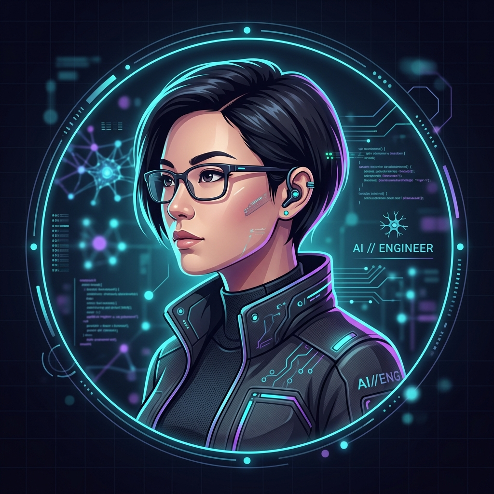

AI Engineer skilled in Retrieval-Augmented Generation (RAG), NLP pipelines, LLM integration, FastAPI backend microservices, and n8n intelligent automation workflows.

I am an AI Engineer with hands-on experience developing AI and backend solutions through professional internships, freelance engineering, and academic systems development.
Skilled in building Retrieval-Augmented Generation (RAG) systems, NLP pipelines (intent classification & entity extraction), LLM-powered applications (LLaMA 3 via Groq API), and intelligent automation workflows using Python, FastAPI, FAISS, Sentence Transformers, and n8n.
Experienced in applying concepts from machine learning, natural language processing, and software engineering to develop practical AI solutions including semantic document search, conversational systems, and context-aware text generation across PostgreSQL, Docker, and Linux environments.
Computer Science Degree
Specializing in AI Engineering, Natural Language Processing, RAG Architecture, FastAPI Backends & Containerized Deployments.
all-MiniLM-L6-v2 Sentence Transformer embeddings over a handcrafted knowledge base.Validated expertise in cloud infrastructure deployment, serverless architecture, and backend service integration.
Demonstrated proficiency in building, training, and productionizing end-to-end ML and LLM pipelines.
Certified in relational database design, data integrity, optimization, and advanced query management.
I am open to discuss AI engineering opportunities, RAG pipeline implementations, and scalable backend collaborations.
Get In Touchmubashartanveer054@gmail.com
+92 323 8048382
Lahore, Pakistan